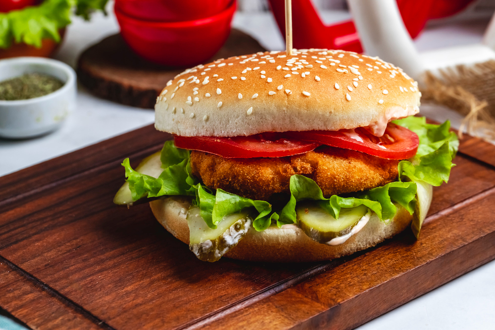

Home
Chicken Burger Recipe

Description
Homemade and wholesome chicken burger's with onion and gherkins [optional].
Serves 4 people
Chicken burgers patties can be wrapped individually and frozen for up to 3 months.
Ingredients
- Chicken: Breast [2 halved].
- Breadcrumbs: Packet of white or wholemeal [75g] or make your own.
- Onion: Red or White [½ sliced].
- Optional: Gherkins [thinly sliced].
- Egg: Medium [1 to bind breadcrumbs].
- Seasoning: Garlic [powder], Salt & Pepper [dash].
- Oil: Olive oil.
- Optional: Cheese [4 slices].
Steps
- Preparation:
- Add 1 tbsp of olive oil to a medium non-stick pan.
- Cut onions, gherkins, cheese and put to one side [thin slices].
- Empty breadcrumbs into a bowl.
- Add seasoning to breadcrumbs.
- Break egg into a seperate bowl and break yolks with fork.
- Cut chicken breast's in half and flatten [butterfly method best].
- Set prepared ingredients to one side.
- Breaded Chicken:
- Dip chicken breast into egg mixture.
- Evenly dip chicken breast into breadcrumbs [shake off excess].
- Once all chicken breast's are coated, heat pan and oil [medium heat].
- Cook Chicken Patties:
- Once oil heated, add chicken patties to pan.
- Cook for 10-15 minutes, turning over once.
- Once golden brown, they are ready to be served.
- Optional: Add to grill or air fryer for extra crisp [5 minutes].
- Optional: If freezing, do so now. Wrap individually in baking paper and tin foil. Store in airtight container.
- Serve:
- Step 1: Cut and butter bread buns.
- Step 2: Add lettuce, onion [or gherkins] to bun.
- Step 3: Add chicken pattie.
- Optional: Add slice of cheese on top.
- Step 4: Add top of bun and serve.
- Optional: Serve with a side of mixed salad & a portion of sweet potato wedges [with BBQ sauce].